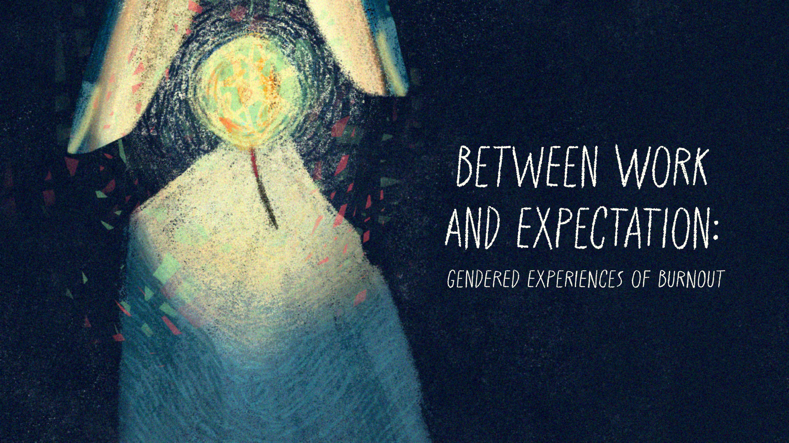

Kaha Mind
The
Dossier
March

Editor's Note
Welcome to this month’s issue of The Dossier, where we translate emerging psychological research into insights for therapeutic practice.
With International Women’s Day this month, we turn our attention to an area of burnout that is often overlooked, i.e., the gendered expectations that shape how women experience work, responsibility, and rest.
In conversations with clients, burnout is rarely described as just the result of long hours or demanding workplaces. Many, particularly women, speak about holding multiple roles at once across professional, relational, and caregiving spaces, alongside an internal pressure to keep going even when they feel depleted. Stepping back can feel difficult, not only because of external demands, but because it can carry a sense of falling short of who they are expected to be.
In this month’s issue, we explore a research paper on gender roles and job burnout which suggests that women report higher levels of burnout than men and that this gap is not fully explained by job conditions alone. Instead, the study points toward how internalised beliefs about responsibility, caregiving, and productivity shape how burnout is experienced.
By bringing this research into clinical context, we invite a broader understanding of burnout as not only an individual or workplace issue, but one shaped by the social expectations that women carry.
Article in Focus
Artz, B., Kaya, I., & Kaya, O. (2022). Gender role perspectives and job burnout. Review of Economics of the Household, 20(2), 47-470 https://doi.org/10.1007/s11150-021-09579-2
Key Takeaways
- Gender differences in burnout may be shaped by social beliefs, not only job conditions: While women often report higher levels of emotional and physical exhaustion from work, the study suggests that this gap may partly reflect broader beliefs about gender roles in society.
- Traditional gender role beliefs appear to intensify burnout among women: Women who hold more traditional views about women’s roles, such as prioritising caregiving or domestic responsibilities, reported higher burnout when participating in the workforce.
- Workplace stress cannot be fully understood without considering social expectations: Burnout may arise not only from job demands, but from the tension between professional roles and internalised expectations about gender, family responsibilities, and identity.
Article in a Nutshell
Work and family are two central domains of life, but the expectations tied to each often overlap in ways that create strain. This tension between paid work and caregiving responsibilities has been consistently linked to anxiety, low wellbeing, and burnout. While women’s participation in the workforce has increased significantly over time, expectations around unpaid caregiving and domestic work have remained relatively unchanged.
Much of the existing research has attempted to explain burnout through job-related characteristics such as workload, occupation, and working conditions. However, these factors do not fully account for the gender gap. The study in focus addresses this gap by examining whether internalised beliefs about gender roles and social expectations also shape how burnout is experienced.
Using nationally representative data from the United States, the researchers explored whether workplace characteristics alone can explain these differences, or whether personal beliefs about gender roles play an additional role.
The study explored:
- Differences in burnout between men and women
- Whether job characteristics such as occupation, working hours, and job conditions explain these differences
- The influence of holding “traditional” vs. “progressive beliefs about gender roles on experiences of burnout
Main Findings
The study found that women reported higher levels of job burnout than men, a pattern that remained statistically significant even after accounting for demographic factors, job characteristics, and family-related variables.
Although long working hours, limited flexibility, and job insecurity were associated with higher burnout overall, they did not explain the gender gap.
Gender role beliefs were a key differentiating factor:
- Women with more traditional views (e.g., prioritising caregiving and domestic roles) reported higher burnout than both men and women with more progressive views.
- Women with more progressive or egalitarian views (e.g., shared responsibility across work and home) reported lower burnout than women with more traditional views, and levels comparable to men.
Further analyses in the study suggest that the gender gap in burnout is driven less by differences in actual working conditions and more by differences in how these conditions are experienced and evaluated. When these differences in interpretation are accounted for, the gap in burnout between men and women is substantially reduced, and in some cases disappears.
Limitations
The study in focus draws on survey data from the United States, which may limit how well the findings generalise to other cultural contexts where gender norms differ.
Additionally, the data relies on self-reported measures of burnout and attitudes, which may be influenced by personal perception or social desirability.
While the findings identify strong associations between gender role beliefs and burnout, the study cannot fully determine causal direction.
Bringing The Research into Context
Burnout is often framed as the outcome of excessive workload, long hours, or demanding workplace environments. While these factors are undeniably important, this research suggests that job conditions alone may not fully explain why certain groups consistently report higher levels of exhaustion. Instead it draws attention to how people interpret and experience their roles at work in relation to broader social expectations.
This study also points to an important distinction: burnout may not simply be about how much one is doing, but whether these roles feel aligned with one’s expectations about work, caregiving, and responsibility. The findings suggest that when professional responsibilities feel aligned with one’s sense of identity or expectations, they may be experienced as more manageable. In contrast, when there is a perceived mismatch, the psychological effort required to reconcile the two can contribute significantly to exhaustion.
In the Indian context, this mismatch may be especially pronounced. For many women, participation in paid work often coexists with deeply embedded expectations around domestic labour, caregiving, and emotional responsibility. Even in dual income households, these expectations may remain unevenly distributed. As a result, work is not simply added to existing responsibilities, but layered onto them, often without a corresponding redistribution of roles.
In the therapy room, this can show up as a pressure among women clients to be equally competent across multiple domains. Women may describe feeling constantly behind, experiencing guilt when prioritising work, or holding themselves to high and sometimes conflicting standards across roles. Burnout, in these cases, may not present as dissatisfaction with work alone, but as a more diffuse sense of exhaustion that cuts across personal and professional spaces.
At the same time, these experiences are not uniform across contexts. In certain matrilinear or matrifocal communities within India, where caregiving roles and decision-making structures are organised differently, there may be greater alignment between expectations and lived roles. This could potentially reduce some forms of role conflict, although this remains an area that requires more research.
Taken together, the findings suggest that burnout is not only a function of job demands or an individual failing, but also of the relationship between work and the social meaning attached to it.
Clinical Toolkit for Therapists
| 1. | Identify Sources of Burnout Beyond the Workplace |
Burnout may not arise only from professional workload. As therapists, inviting client conversations across domains of paid work, caregiving, emotional labor, and family roles can help clients see patterns of role conflict, role overload, and time scarcity. |
| 2. | Explore Gender Role Beliefs and Any Values Mismatch |
Clients can often internalize gendered expectations around productivity, caregiving, or emotional availability. Therefore, helping clients explore their beliefs and preferences about gender roles can be helpful. While for some women, distress may stem from excessive work demands, for some it may originate from a mismatch between personal values and current work demands. Understanding whether clients prefer traditional, egalitarian, or fluid role arrangements can guide meaningful therapeutic exploration. |
| 3. | Expand Identity Beyond Productivity | While experiencing burnout, clients may feel fragmented between professional identity, family roles, and personal values. As therapists, we can support clients in reflecting upon this experience of fragmentation and how they can define themselves beyond productivity, and how they want different parts of their identities to coexist flexibly. |
| 4. | Support Boundary Setting in Relationships |
Burnout frequently involves blurred boundaries, particularly in emotional and caregiving roles. It can be helpful to work with clients to identify where they feel over-responsible for managing others’ needs and how boundaries can be gradually clarified or renegotiated. |
| 5. | Reframe burnout from “Personal Failure” to “Structural Strain” |
The lived experience of burnout in clients is shaped not only by individual coping but also by broader social structures. Gender stereotypes, workplace hierarchies, and socioeconomic conditions can influence how burnout develops and how it is expressed. In contexts such as India, it becomes imperative for us as therapists to acknowledge how factors like socioeconomic differences, informal employment and encroachment on workplace safeguards significantly shape burnout experiences. Bringing in this lens can help shift clients from self-blame to contextual understanding. |
| 6. | Checking Our Own Lens | We as therapists need to notice our personal assumptions surrounding work, caregiving, productivity, or gender roles that may influence the therapeutic process while assessing needs or conceptualizing interventions. Without reflection, our assumptions can inadvertently reinforce gendered expectations. For example, we may gently steer female clients toward less demanding roles at work or greater focus on household responsibilities, as opposed to exploring other ways of redistributing household chores to manage burnout. |
What's Coming Next: Save the Date
Stay tuned for our next Dossier issue in April! In the meantime, we welcome your input. If you have ideas for research questions, or areas you would like the digest to explore, please share them with us at research@kahamind.com
References & Further Reading (Happy Reading!)
Artz, B., Kaya, I., & Kaya, O. (2022). Gender role perspectives and job burnout. Economics of the Household, 20(2), (4), 447–470. https://doi.org/10.1007/s11150-021-09579-2
Rahman, F., & Mokoena, T. (2025). Psychosocial Pathways to Burnout in Women in High-Responsibility Caring Professions. The Psychology of Woman Journal, 6,1–10.https://doi.org/10.61838/kman.pwj.6.3.17
Wells, J. E. (2024, July 9).How Invisible Work at Home and on the Job Fuels Burnout | Psychology Today.https://www.psychologytoday.com/us/blog/our-invisible-work/202407/how-invisible-work-at-home-and-on-the-job-fuels-burnout-0
Worly, B., Verbeck, N., Walker, C., & Clinchot, D. M. (2019). Burnout, perceived stress, and empathic concern: Differences in female and male Millennial medical students. Psychology, Health & Medicine, 24(4), 429–438.https://doi.org/10.1080/13548506.2018.1529329